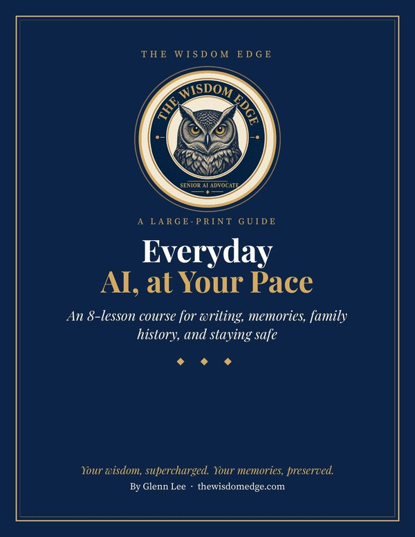

A note from Glenn
Everyday AI, at Your Pace
Hello, and welcome. I’m Glenn Lee, and I’m so glad you’re here.
This is the online companion to your large-print guide. You can read the eight lessons here, at your own pace. There is no test, and no rush.
A warm welcome
We go slowly. You stay in charge. Everything that is free on our list stays free.
In these lessons you will learn to ask a clear question, write everyday notes in your own voice, get a memory onto the page, take first steps in family history, and keep private details safely in your own hands.
We use Grok as our starting tool. It is free to try at grok.com. You can sign in with your email. You do not need a new app if you prefer the web. Other tools work too, and the same habits carry over.
If you would rather work on paper, you already have the printable guide from your purchase email.
If you get stuck, write to support@thewisdomedge.com. Tell me what you tried. I will help you through it.
Warmly,
Glenn Lee
How to use this course
No login is needed
There is no password to remember. You can come back to this page whenever you like. You may want to bookmark it, so it is easy to find.
Go in order, if you can
The lessons work best from 1 to 8. You can also open any lesson when you need it.
Take your time
There is no deadline. Try one lesson a day, or sit and read as many as you like.
Try the short practice
Each lesson ends with a simple thing to try. That is where the skill sticks.
The eight lessons
Choose a lesson to begin. Big buttons, so they are easy to tap.
- Lesson 1. Ask so Grok really understands you A simple recipe for clearer answers.
- Lesson 2. Write the note you have been meaning to send Draft a note, then change it so it sounds like you.
- Lesson 3. Learn something new, or plan something real Ask Grok to explain or plan, then check one fact yourself.
- Lesson 4. Stay in charge: what you share, and what you believe A never-share list, a callback rule, and a family safe word.
- Lesson 5. Speak a memory, and get it onto the page Turn one real memory into a first written draft, in your own words.
- Lesson 6. Shape the story so it sounds like you, and keep it Edit the draft, then save a copy your family can find.
- Lesson 7. Explore your family history, then check the records Let Grok organize what you know, then confirm the facts in real records.
- Lesson 8. Your own simple AI habit, and a plan to keep going A short weekly rhythm, plus a habit sheet to keep by your chair.
Checklists to keep
These live inside the lessons. You can print a lesson, or copy a card onto a small sheet, and keep it by your chair.